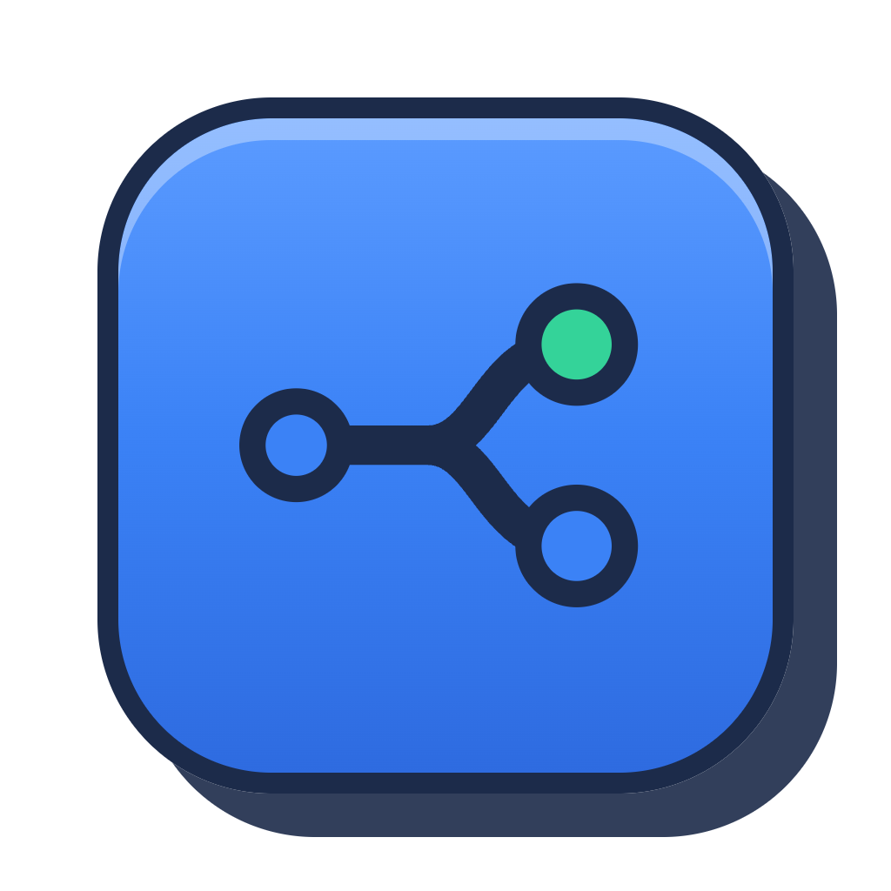
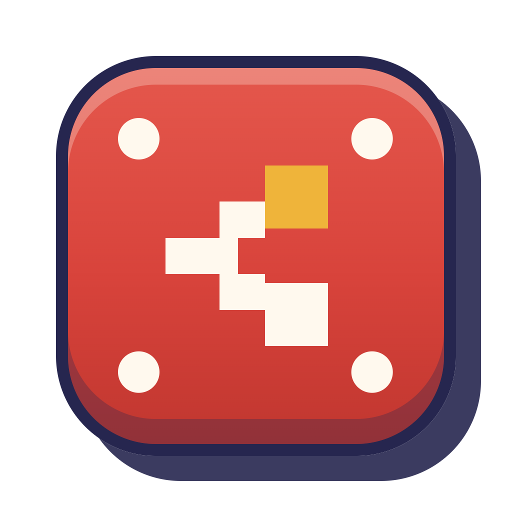
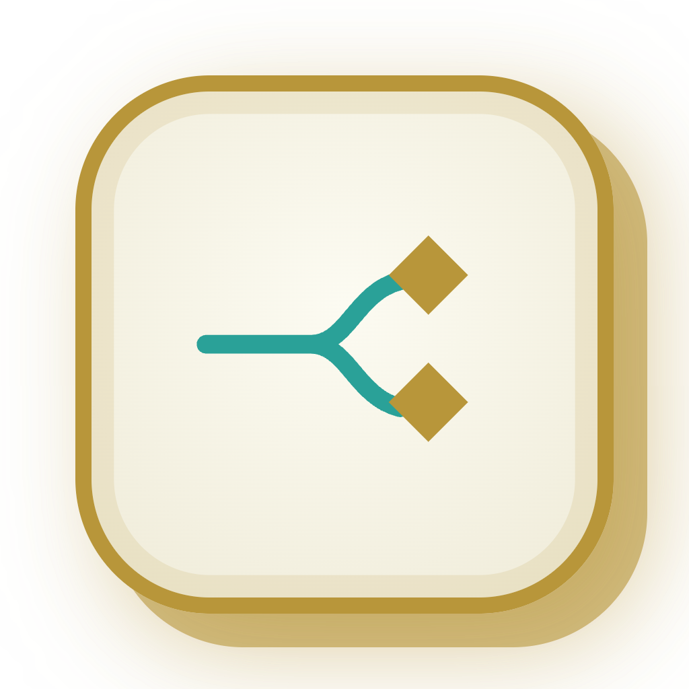
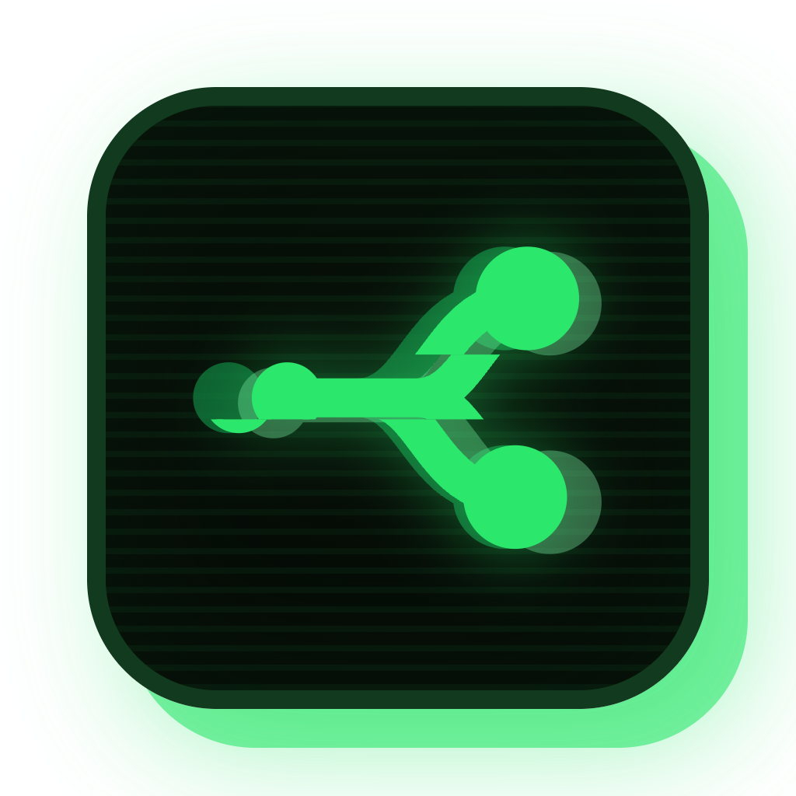

Gewählt: Wortmarke in Plus Jakarta Sans 700, Symbol als blanke Marke mit gefülltem Stamm und hohlen Knoten. §01 zeigt die Kombination fertig, §02 warum das Icon eine eigene Frage ist, §03 vier Icon-Varianten, §04 den Test, der über sie entscheidet (16 px), §05 die Folgen.
Der harte Punkt vorweg: die Sidebar-Marke steht auf 20 px und darf blank sein — das Dock-Icon steht auf einer Kachel, weil macOS ihm keinen weißen Grund garantiert, und es muss zusätzlich als 16-px-Favicon im Browser-Tab funktionieren. Hohle Knoten sind genau dort das Risiko.
Links der Sidebar-Kopf in echter Breite, daneben derselbe Logo-Knoten vierfach vergrößert,
rechts der Empty-State (Logo.tsx:227, scale(1.6)). Wortmarke einmal einfarbig
und einmal mit „flo“ in blue-600 — die Frage aus Runde 8 ist damit wieder offen.
A · einfarbig — Wortmarke ganz in gray-900.
B · zweifarbig — wie Ink Blue und Mushroom Kingdom.
Ringwand 1,7 px, Loch 3,0 px bei 20 px Marke. Unter der Lupe getrennt, in der Sidebar knapp.
fill="var(--color-white)" hin, nicht none.So erscheint es mitten im leeren Chatfenster. Hier gewinnen die Ringe, hier fällt das y von Plus Jakarta Sans auf.
scale() ändert den Platzbedarf nicht — der
gap von 9 px wird mitskaliert, der umgebende Abstand nicht.Echte Dateien, direkt aus electron/assets/ geladen (1024 px, hier auf 132 px
dargestellt). Simply Blue steht zuerst und trägt heute schon denselben Bau: Kachel, Kontur,
harter Offset-Schatten. Der Unterschied liegt in zwei Zahlen.

Ink Blue
Mushroom Kingdom
Hyrule
Matrix| Icon | Kontur | Offset-Schatten | Marke |
|---|---|---|---|
| Simply Blue | Schiefergrau #CBD5E1 — fremd zur Kachel |
hellgrau #E2E8F0, auf hellem Grund kaum sichtbar |
einfarbig weiß, gefüllte Knoten |
| Ink Blue | Navy #1C2B4A, die eigene Tinte | dieselbe Navy-Tinte | zweifarbig, Knoten mit Kontur |
| Mushroom Kingdom | Dunkelviolett #26264F | dieselbe Tinte | vierfarbige Pixel |
| Hyrule | Gold #B8963A | dasselbe Gold | zweifarbig, Rauten |
| Matrix | Phosphorgrün | grüner Schein | drei Grünstufen, Glitch |
Die vier anderen ziehen Kontur und Schatten aus ihrer eigenen Themefarbe — das Icon liest sich als ein Material. Simply Blue borgt sich beides aus dem Graustufen-Satz. Die Begründung dafür steht in der Datei: „Basic hat nirgends eine Tintenkontur“. Das war vor S5 richtig. Mit S5 hat Simply Blue jetzt eine Kontur-Sprache — die Ringe der Knoten sind genau das.
Alle vier stehen auf dem 1024er Raster der Produktionsdatei: Kachel 775 px, Radius 187,5, Kontur 25, Offset-Schatten 800 px um 50/50 versetzt, Marke zentriert auf (492|472). Geändert sind nur Farbe der Kontur, Farbe des Schattens, Füllung der Kachel und die Marke.
Blauverlauf, grauer Rand, Lichtkante — unverändert. Nur die Marke wird S5: hohle Knoten, der Verlauf scheint durch die Löcher.
Der Schritt, der Simply Blue in die Reihe der anderen vier stellt: Kontur blue-800,
Offset-Schatten blue-800 — wie Ink Blues Navy, Hyrules Gold, Mushrooms Violett.
Weiße Kachel, Kontur blue-600, Marke blue-600 — dieselben Farben und
dieselbe Richtung wie in der Sidebar. Schatten bleibt Simply Blues Tinte #E2E8F0.
Kachel blue-50, Kontur und Marke blue-700, Schatten blue-200.
Hell wie I3, aber ganz aus einer Farbfamilie — kein Weiß, kein Grau.
Erste Reihe: dieselben vier Grafiken in 128, 64, 32 und 16 px — 32 px ist die Dock-Größe im Umschalter (⌘-Tab), 16 px der Browser-Tab. Bei 16 px ist die Ringwand 0,67 px und das Loch 1,2 px: rechnerisch unter einem Pixel. Zweite Reihe: dasselbe auf dunklem Grund.
| Variante | 128 px | 64 px | 32 px | 16 px | gefüllte Knoten zum Vergleich (16 px) |
|---|---|---|---|---|---|
| I1 | = das heutige Favicon. Links daneben derselbe Platz mit Ringen. | ||||
| I2 | |||||
| I3 | |||||
| I4 |
Im Dock neben den anderen vier — oben heller Schreibtisch, unten dunkler. Die dritte Kachel ist jeweils die neue.
| Sidebar-Logo | Logo.tsx:73-113 — Kachel-span entfällt, SVG auf 20 px, Wortmarke auf Plus Jakarta Sans 700. Die Ringe brauchen fill in Weiß, nicht none. |
| Schrift-Paket | npm i @fontsource/plus-jakarta-sans + import '@fontsource/plus-jakarta-sans/700.css' in main.tsx — dieselbe Zeile wie für die vier anderen Theme-Schriften. |
| Icon-Dateien | drei Stellen, alle drei von Hand gepflegt: design/app-icon-professional.svg (Quelle), electron/assets/icon-professional.png (1024er Ausgabe, headless Chromium mit omitBackground), frontend/public/favicon-professional.svg (16-px-Fassung, ohne Offset-Schatten). Dazu icon.icns/icon.png, wenn Simply Blue das Standard-Icon des Bundles bleibt. |
| Ringe bei 16 px | Wenn der 16-px-Test durchfällt: Favicon behält gefüllte Knoten, Dock und Sidebar tragen die Ringe. Ein Icon-Satz, der sich zwischen 16 und 1024 px im Detail unterscheidet, ist üblich — Ink Blue macht es heute nicht, hat aber auch keine Löcher. |
design/mockup-logo-simply-blue-round10.html · Fortsetzung von
mockup-logo-simply-blue-round9.html (T5 + S5 gewählt). Icon-Maße 1:1 aus
design/app-icon-professional.svg; die vier fremden Icons sind die echten PNGs aus
electron/assets/. Muss über einen Server aus dem Repo-Wurzelordner geöffnet werden,
sonst fehlen diese vier Bilder.